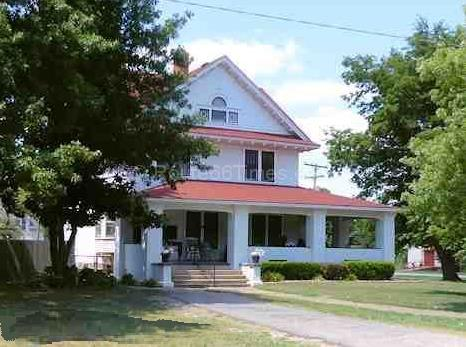
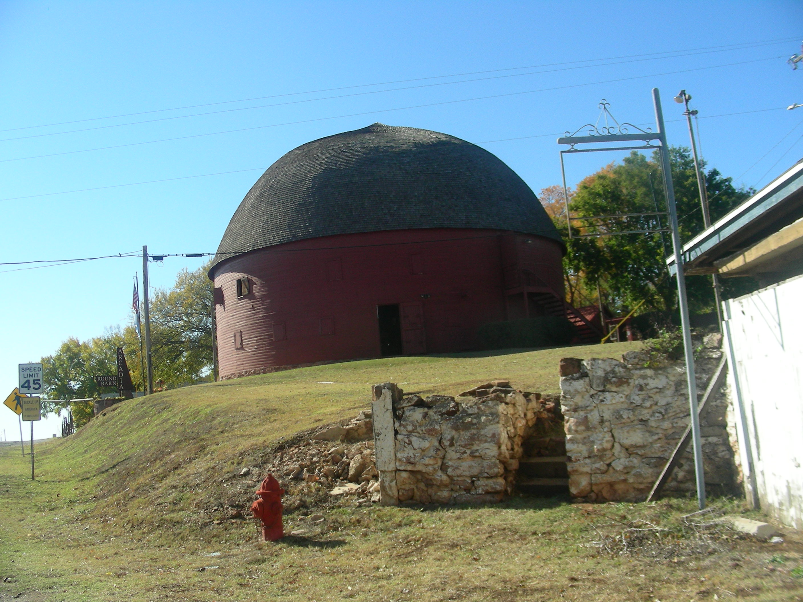

Day 3 Tuesday Oct 25
Miami, OK to Oklahoma City, OK 234 miles
Attractions -
Hogue House- Sears 1st Prefab House, Vinita, OK
Blue Whale- Park & Lagoon Catoose, OK
Seaba Station Vintage Motorcyle Museum in old Gas Station Warwick, OK
Comfort Inn in OK City
Great Day!
We started out the day looking and finding the Hogue House. Nice neighborhood; pretty cool!

From here we headed out to the middle of nowhere to find the Totem Pole Park. Great place to visit with a gift shop with some unusual items.
 This
Park should definitely be on your list of Route66 stops. It is still
a very nice park area, but I can imagine it, back in time, with
families picnicking around the area. Kids jumping off the Blue Whale;
swimming, laughing, just having fun. Parents getting together;
talking, complaining ‘bout work, the kids, whatever. The place has
a real Route66 feel.
This
Park should definitely be on your list of Route66 stops. It is still
a very nice park area, but I can imagine it, back in time, with
families picnicking around the area. Kids jumping off the Blue Whale;
swimming, laughing, just having fun. Parents getting together;
talking, complaining ‘bout work, the kids, whatever. The place has
a real Route66 feel.
S


 eaba
Station Gift Shop And Motorcycle Museum
(In A Ghost Town!)
eaba
Station Gift Shop And Motorcycle Museum
(In A Ghost Town!)
If you like motorcycles, just a little bit even, you have to stop here at the Seaba Station!
Originally, we knew very little about this ghost town of Warwick, Oklahoma. The town was just listed as one of the many ghost towns on the Route66 adventure. It was originally a gas station long ago, then converted to a machine shop, etc.,etc.,(check out the Website).
We almost drove right by it, as we were looking for a ghost town. This was just a stand alone building that almost looked vacant. But we stopped. We looked around and found a door and went in.
Before us was a beautiful, rustic gift shop with a few vintage motorcycles scattered about. Unique Route66 T-Shirts and Motorcycle shirts were hanging everywhere. Many different types of items are also available. Pretty Cool. Behind a counter was a nice guy, who told us to take our time and look around. We did; picked out some stuff to buy (I got a cool T-shirt) and went to the counter.
We made our purchase and told the gentleman(one of the owners, I believe) how great the place was and headed for the door. He said, “don’t you wanna see the rest of the museum?” He pointed to a doorway right next to the checkout counter. We walked through it into Motorcycle Wonderland.
I couldn’t believe it and still have trouble believing it. Rooms ahead full of vintage motorcycles. I’ve owned several bikes in my life and this place had ‘em all, in great conditon. They have models of every motorcylce, mini bike, and vintage models of bikes I never even knew existed. I truly was in Awe! Don’t miss this one!
As we were leaving, the gentleman at the counter suggested we look at the old building by the station, which at one time housed running water bathrooms. I guess, one of the first in the area. Very interesting.

The round barn in Arcadia is cool.

End Of A Great Day

 We
finished the day having dinner at an Iron Skillet in a Petro Truck
Stop in Oklahoma City, Oklahoma. We chose the
We
finished the day having dinner at an Iron Skillet in a Petro Truck
Stop in Oklahoma City, Oklahoma. We chose the 
 restaurant
because it was close to the Comport Inn where we were staying for the
night. Both places w
restaurant
because it was close to the Comport Inn where we were staying for the
night. Both places w ere
fine.
ere
fine.